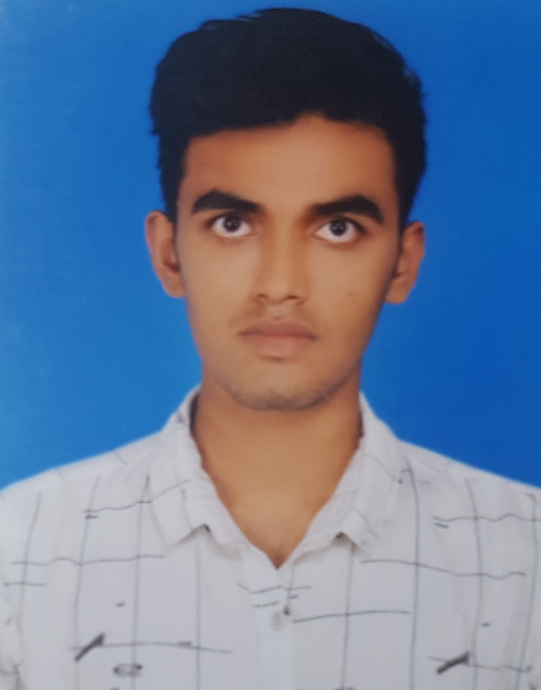

CURRICULUM VITAE
Naimur Rahman Durjoy
Student Of Daffodil International University
Address:Changao,Ashullia,Savar,Dhaka.
Email:durjoy15-4304@diu.edu.bd

CAREER OBJECTIVE
Went to be a successful web developer in IT sector with all the effort the can be given.
JOB EXPERIENCE
Worked as a teacher at a coating center.
SKILL
- Web developement(html,css,js,py)
- C,C++ programming (CP)
- Java(With OOP)
- Hard Working.
ACADEMIC QUALIFICATION
Education Qualification
| Degree |
Year |
Institution |
Result |
| BSC in CSE |
2023 in 5th semester |
Daffodil International University |
3.88 |
| HSC |
2019 |
SKSC School & Collage |
4.12 |
| SSC |
2017 |
Jhenaidah Govt. Boys School |
4.92 |
| JSC |
2015 |
Dhopabila Secondary School |
5.00 |
EXTRA CURRICULUM ACTIVITIES
- Worked as a volunteer in annual prigramming in motijheel idel collage in 2015.
- Reached to the second round in "DIU READING COMPITITION"in 2018.
- Worked as a volunteer in 2nd ICT carnival in 2019.
- Take partivipation in DIU CSE Inter Department Programming Contest.
- Joined in Volunteer Service Club of Daffodil International University.
LINGUISTIC PROFICIENCY
- English: Efficiency in reading, Writing, speaking and Listening.
- Bangla: Efficiency in reading, Writing, speaking and Listening.
- Hindi: Efficiency in speaking and Listening.
- Tamil: Efficiency in speaking and Listening.
- Germany: Efficiency in speaking and Listening
PERSONAL INFORMATION
- Father's Name: MD. Jalal Uddin
- Mother's Name: Mst. Namzma Begum
- Date of Birth: 15-10-2002
- Nationality: Bangladesh
- Religion: Islam
- Marital Status: Single
- Permanent Address: District-Jhenaidah, Thana-Jhenaidha Sader, Paglakanai
- present Address: Changao,Ashullia,Savar,Dhaka
INTEREST
- Play with Guiter
- Singing
- Travelling
- Make a good communication with ex-gf
REFERENCE
Professor Dr. Touhid Bhuiyan
Head of the Dept. of DIU
Daffodil International International University.
Email:headcse@daffodilvarsity.edu.bd